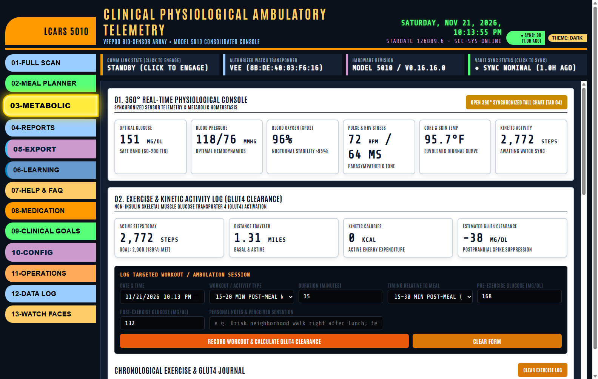

Module 4: Tab 03 METABOLIC Console & Behavioral Science
03-METABOLIC Console: Real-Time Physiological Telemetry
SLIDE 19 / 53
TAB 03: 360° REAL-TIME METABOLIC CONSOLE
Synthesizing multi-sensor biometric streams into a single live behavioral console.
Unified Biometric Overview:
Simultaneously displays glucose, heart rate, dual temperatures, and step activity.
Real-Time Cause-and-Effect:
See immediately how a meal or walk shifts multiple biomarkers at once.
High-Contrast Senior Readability:
Solid white surfaces with bold colored typography ensuring instant clarity.

TAB 03: METABOLIC CONSOLE
360° LIVE SYNTHESIS
GLUCOSE 182 • HR 68 • TEMP 97.2° • STEPS 2,384
Real-time unified synthesis correlating nutritional intake, exercise movement, and continuous physiological response.
POST-MEAL TARGET: <180
GLUT4 EFFECT: -20 TO -40
Key Takeaway:
A single comprehensive cockpit that reveals the immediate impact of daily habits on blood sugar.